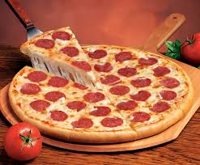

Pizza

Pizza is a world-famous Italian dish consisting of a round, flat dough base topped with tomato sauce, cheese, and a variety of toppings, then baked in a hot oven. Crispy, cheesy, and endlessly customizable, pizza can range from classic Margherita to loaded meat-lovers or veggie styles.
Ingredients
- 3 cups all-purpose flour
- 1 tsp salt
- 1 tsp sugar
- 2 tsp dry yeast
- 1 cup warm water
- 2 tbsp olive oil
- 1/2 cup tomato sauce (or crushed tomatoes)
- 1–2 cups shredded mozzarella cheese
- Salt, pepper, and oregano to taste
Steps
- Dissolve yeast and sugar in warm water. Let it sit for 5–10 minutes. Add flour, salt, and olive oil. Knead until smooth. Let it rise for 1–1.5 hours until doubled in size.
- Mix crushed tomatoes or tomato sauce with salt, pepper, oregano, and a little olive oil. Simmer briefly or use as-is.
- Preheat your oven to 220°C (425°F). Roll the dough into a thin circle on a floured surface.
- Spread sauce over the base, add cheese, then any extra toppings (e.g., mushrooms, pepperoni, olives).
- Place on a baking sheet or pizza stone and bake for 12–15 minutes, or until the crust is golden and cheese is bubbling.
- Top with fresh basil or a drizzle of olive oil, then slice and enjoy!
Home